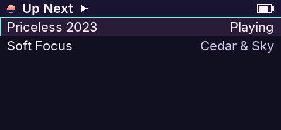
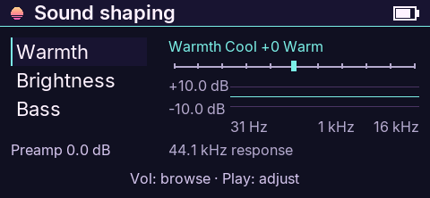

Cover Flow
Flip through covers, browse an artist’s albums by year, or jump by letter in long lists. Albums without artwork get a cover with their initials.
Browse the library →Custom firmware / SNOWSKY ECHO
Browse your albums by cover, rearrange the songs coming up, and save the best mixes for another listen.
ECHO hardware & specs →Made for the Snowsky ECHO ↗.
Flip through covers, browse an artist’s albums by year, or jump by letter in long lists. Albums without artwork get a cover with their initials.
Browse the library →
Add or move songs in Up Next. Save up to 32 mixtapes, including two-sided C60 or C90 tapes you flip as you listen.
Manage the queue →
Add warmth, bring vocals closer, or fine-tune a parametric EQ. Save your sound and keep favorite controls in Quick Settings.
Adjust the sound →Choose one of five built-in themes or add a custom .gtheme pack for new colors, artwork, and icons. Preview the result on the player before saving.
Explore custom themes →
Screens shown with a sample library.
Gapless playback keeps compatible tracks together, from live sets to continuous mixes.
Playback →M4B books get their own shelf, chapter titles, and bookmarks. Slow down or listen faster, from 0.5× to 3×, without changing the pitch.
Audiobooks →Assign tap and hold shortcuts. Skip with Power + Volume even while locked, or control playback with the screen off.
Controls →Change the text size or switch to portrait. On Now Playing, choose Cover, Cassette, VU meters, or Spectrum.
The Gnarlyr interface · Snowsky ECHO
Choose the Snowsky ECHO (the full-size model). Install Gnarlyr separately with the installation guide.
As an Amazon Associate I earn from qualifying purchases. I may also earn a commission from AliExpress links.
Save a copy of the files on internal storage.
Copy the firmware file over USB and follow the guide to restart.
Add music and let the player scan it.